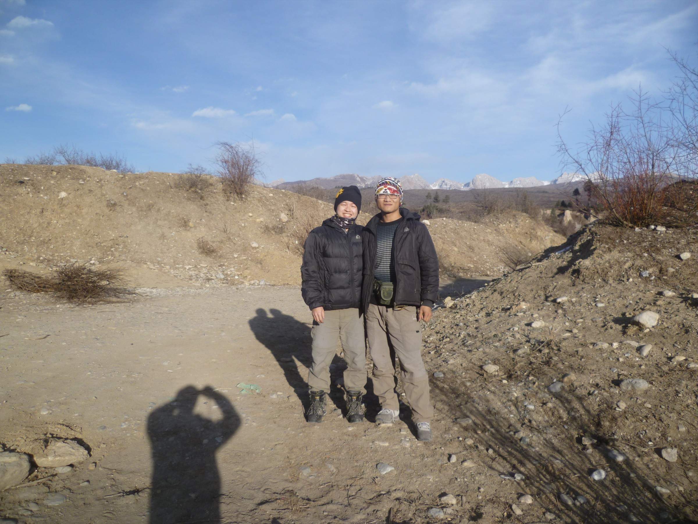

发信人: hemind(hooft), 信区: outdoor
标 题: 未完的旅途——七藏沟
发信站: 饮水思源 (2013年02月10日01:10:44 星期天)
啰啰嗦嗦讲了一大篇，大家将就着看。
寒假的线路很早就开始准备了，考虑过三奥之奥太娜，四姑娘山长坪沟，七藏沟。最后还
是倾向于漂亮的七藏沟。
七藏沟，狭义就指卡卡沟。
screen.width - 200){this.width = screen.width - 200}">
我们的计划路线：
卡卡沟口3300——长海子3800——长海子垭口4200——鱼海子3700——草海3700——红星
海4000——
①岩羊沟（垭口海拔4300-4400）——安备村3500，18公里
②塔子沟（垭口海拔4400-4500）——安备村3500，20公里
计划四天，营地分别为卡卡沟口，长海子，鱼海或草海，红星海。
若不能翻越长海子垭口，则原路返回。若不能翻越红星海处的垭口，则返回到鱼海子，次
日阿翁沟下撤。下撤路线，阿翁沟。
结果还是有些装备准备得略仓促，24、25日才在网上买了雪套，太阳镜，手套等东西，送
到成都。还有帐篷没有选择好，三季帐防风很差。最终还是咬咬牙买了一个A塔无杆帐篷，
这是在离开学校去火车站前下的一单，只好顺风加急了。
26日晚坐上K282次列车，车上基本上都是四川人，都回家过年了；在车上期待着山上厚厚
的积雪，无聊但无心看窗外的风景，27日睡过，晚上实在无聊起来看了几集《荒野求生》
直到电脑没电，后在床铺里捣鼓手机导航，查找无杆帐篷的搭建方法，总有点担心。28日
中午11点40左右到达成都站，我在出站口附近，zbg突然蹿出来吓我一跳。我们坐上地铁，
Zbg说成都地铁上美女多，观察了一会儿，还真是，哈哈。我们须从茶店子车站坐车到松潘
县川主寺镇，Zbg的舅舅在成都茶店子车站附近。所以我们直奔他舅舅家，当天还有一个快
递没到，zbg的雪套，太阳镜和我的抓绒手套，联系了快递公司，打了几个电话都不知道我
们的快递在哪里，最后终于弄好了，加急送过来，我们才放心的去买了隔日茶店子到川主
寺的车票。在zbg舅舅家整理好背包，等待第二天出发，那晚睡得也不好，醒了几次，早晨
醒来发现手机充电器没插好，完全没充进电，幸好有另外一个充好的电池，这次的想尝试
的手机导航用起来也没有这么顺利了。8点起床吃了点饭，出发。
在车上，我旁边坐的是个藏族的姐姐（阿姨？），我开始试着搭讪，得知她住在我们此行
的终点—安备村旁边的川盘村。她是去了成都的妹妹家，现回家过年了。她说城里没有家
里好耍，在城里不认识几个人，没有蓝天；还是家里热闹，一村子的人可以聊天，跳舞。
她还给我看了她相机里的照片，全家福，还有川主寺，活佛。某时，她从包里拿出一个很
小的“盒子”，上面写着LV，结果她一打开，是个手机。我当时就震惊了。还没有我的手
机一半大。她说她人小，所以用的手机也小，还问我可爱不。
车子经过映秀，汶川新县城，看到很多地震遗址，还看得见山体滑坡留下的痕迹。思绪又
回到了2008年5月12日，同学们疯狂的在楼梯里往下跑。仿佛听到当时人们撕心裂肺的惨叫
声，那是不能忘却的记忆。很快到了川主寺，拿好行李就走过来一个50岁左右师傅，说了
句：是你们吧？我们说：对！便上了文师傅的车。其间下车吃了15元一碗的牛肉面被坑。
师傅在车上一直询问我们有没有带好防寒的衣物，问我们有没有准备好。Zbg还问了山上会
不会有狼，师傅说有，但是我不相信，我在网上没有听说看到狼的事情，牦牛倒是有。我
们于17点20到达卡卡沟口。
卡卡沟口，海拔3000米。拍了照片，出发了。
 screen.width - 200){this.width = screen.width - 200}">
下去之后沿着河流向上走，慢慢的看到了冰块，山谷两侧的山也很独特，奇形怪状的石头
，碎石；阳光洒在上面，美极了。进入沟里没多久，已是这番模样。
screen.width - 200){this.width = screen.width - 200}">
穿上四齿的冰爪，对付这种冰面完全没有问题。刚开始我们还很享受在这样的冰面上行走
的感觉。这会儿还有太阳，看了看GPS，18点半太阳下山。我们在冰面上刷刷的走了半个多
小时，我觉得略累，咳咳，走快了，在这里不比在江浙一带。我们注意节奏，结果没过一
会儿我们又快起来了。此时已经18点10分了，我们开始找营地，到处都是冰面，打不下地
丁。结果又走了十分钟才找到了一处碎石地面，赶紧下包，拿出帐篷。试了试，地丁打不
进去，但是有石头，迅速捡了些来，用风绳将地丁孔拴在石头上。先是固定帐篷四角，然
后登山杖一撑，调整，系风绳。整个过程还算比较快。不过第一次搭建，不是很好看。在
我调整的时候，Zbg也找来了些柴火。篝火和晚饭同时开动了。今天的晚餐是面疙瘩煮香肠
，香肠是zbg从家里带来的，很香哦。结果风有些大，做饭时有点慌，不过还好。吃完了饭
，我的锅第一次上了柴火灶，为烧点热水，熏得黑不溜秋，一直舍不得在柴火上烧，这下
好了,为我使用柴火炉打下了基础。收拾完毕，准备睡觉。由于今天坐车上升过快，再加上
下午走得有点快，还要搬石头搭建帐篷。睡觉时我和zbg都有点头痛，轻微高反。不过也没
怎么担心，知道这是正常的。20点睡觉，外面的月光很好，照在帐篷上，很亮，根本不像
是在夜晚。这一夜睡得一般，风吹在帐篷上唰唰地响，加上门厅的地丁有些松，开始我一
直被吵得睡不着，zbg一直裹在睡袋里一动不动，我还以为早睡着了，结果半夜醒来他说他
也一直没睡着。大约在零点左右，我感觉很闷，呼吸好像是没有作用，我当时有些急了，
差点想钻出睡袋透透气，我冷静下来，经行深呼吸，感觉好些了，就这样持续了半小时左
右，起来喝了两次水，并不是渴，而是水里溶有氧气。这一夜我醒了4、5次。另外刚开始
有点热，结果没有把拉链完全拉上，早上被冷醒了。
第二天，7点醒来。还很冷，不想动，拖到7点半起来。这一早慢悠悠的煮了点粥吃。帐篷
内壁结满了霜，睡袋上面落了些冰，身体散发的水蒸汽也在睡袋表面凝结，还想等太阳出
来了晒一晒略微有些湿的睡袋。但是由于是在小山谷里，太阳9点多才照到我们的营地，开
始晒睡袋，结果我们就一直等，冷得我们在冰面上走来走去暖暖身子，这时我们也还很享
受在冰面上行走的感觉。拖拖拉拉，结果收拾好东西出发时都10点了。
不知道有点着急还是怎么，出发比较晚，怕晚上扎营时太晚；我们出发时的速度还是略快
，在走了一个小时之后我觉得有些跟不上，我一直叫zbg慢点。
山谷两边的山都是这样，大石头，碎石坡。
screen.width - 200){this.width = screen.width - 200}">
没走了多久我就对在冰面上行走产生了厌恶感，由于只是简易的四齿冰爪，绑在鞋子中间
，这样在提脚的时候如果前脚掌接地，就会滑一下，感觉比较累，而且冰爪尖每一次入冰
都会引起鞋底振动，脚底板被震得发麻。
我们始终靠着沟的左侧走着，有明显的路，但是是不是也会进入冰面，时不时的过河。走
在冰面有时会发出一种空响声，那就是冰底下是空的，需要注意，如果你走的路这个声音
越来越大，一定要换个方向，不然掉进冰窟窿，下面就是暗河，这么冷的天湿了鞋湿了身
可不好玩。过河时zbg身先士卒，先用登山杖戳戳试试厚度，然后一只脚踩上去试一试，没
问题就快速通过了。我总是小心翼翼地跟在后面，几次发现其实冰都是很厚的，往后过河
时就没有像开始时的犹豫不决了。
装酷一张。
screen.width - 200){this.width = screen.width - 200}">
Zbg一路上都是这个竖起大拇指的姿势。
screen.width - 200){this.width = screen.width - 200}">
路上有幸遇到了一个当地人，50多岁的样子，背着提着一些水壶，我们只是简单的打了个
招呼，习惯性的问了下这条路是不是通向长海子，虽然我们非常确定。而他也只是说了下
自己来打水的。一路上都非常平静，直到遇上了牦牛群。
“走上头，走上头”，zbg一边说一边快速的走过。是的，我们只是遇到牦牛而已。Zbg走
得有点急，河边的牛蠢蠢欲动。我叫zbg慢点走，一边往后看：一头牛正向我跑过来；不过
速度比较慢，我转身停下，挥舞着登山杖吓了那厮一下，它便停下了。通过了牛最多的地
方，但是在我们走得这条路上，也就是河的左侧，有几头牛在悠闲的觅食。Zbg一看，不好
，赶紧过河，走到并不好走的河的右侧，这里有及膝的松软的雪和挡路的灌木丛。为了不
分开，我也跟过去了，我们还把雪套上的红色部分卷起来，生怕牛群会对红色产生强烈的
仇恨感。这一段比较难走，走一步，陷进去，费力。不过当我们离开牛群时便又回到了左
侧的路上。这么一折腾，我们都有点累了，12点半左右我们在路边停下，吃午饭。吃饭时
zbg一直说着牛群的事，说没有准备好，不知道怎么对付牛群，还提到了下撤以及明天就下
山。我解释说是只要不太靠近牛群，如果有牛向你冲过来就吓它一下，完全没有想过就这
样被牛给吓得下山了。居然没有牛群的照片。
下午也很平淡，一路上都是差不多的景色，时不时的遇上几头牛。在快要到长海时也有个
小插曲。当时没有找到路，自己开路爬来爬去，也是很深的雪。我有点累了，走几步又想
歇一下，多亏了zbg在前面带路，后发现路就在山谷左侧的山腰上，便横切过去，非常好走
。
长海子
screen.width - 200){this.width = screen.width - 200}">
screen.width - 200){this.width = screen.width - 200}">
不到16点到达长海子，下包找营地。都是碎石地，我们想找个风较小的营地，开始想去图
中下方的石头那里避风，结果由于坡度太大放弃了。结果还是在图中中间位置离河边不远
一处平底扎营，和前一晚一样，搬石头来系绳子。搭好帐篷，打好水，钻进帐篷，开始做
饭。
结果是晚饭太油腻，zbg没吃了多少就胃不舒服，我们早早睡觉了。
腐败的晚饭。
screen.width - 200){this.width = screen.width - 200}">
这是我拍的，背景就是长海子，没得现场壮观
screen.width - 200){this.width = screen.width - 200}">
一直想着在晚上拍一拍开着灯的帐篷，一抹绿映着海子，结果怕冷没有出去。叫zbg在外面
随便拍了张交差。
screen.width - 200){this.width = screen.width - 200}">
吃得太早，躺了一会儿睡不着，大概八点钟，我们开始聊天，聊人生聊理想。从小学到大
学，各种囧事趣事讲完了，zbg这时提出了明天就下山的想法，我打趣的说想妹子了吧（一
路上没有信号，只有在进沟时发了短信报平安）。的确，当时两个人在帐篷里，都觉得有
点凄凉、孤独，聊天没得聊。Zbg也说两个人在山上比较危险，如果某人出事，另外只有一
个人不好弄，所以呆在山上越久也就越危险。但是我当时想的是每一次出来都有目标，都
是精心准备的，不应该是轻易的放弃，所以我仍然认为如果明天状态好，那就可以继续走
，如果状态不好就从阿翁沟下撤。
这一夜仍然是断断续续的睡觉，月光洒在帐篷上，每一次醒都看见亮斑的移动，多希望早
点天亮，赶紧出发了。
第三天，今天的目标鱼海子或草海，7点醒来，把头伸出帐门张望，远处山头上淡蓝色的光
甚是好看，可惜卡片机拍出来效果很差。做饭了，仍然是粥，在这么冷的天，火枫的高山
气罐也不好用了。我们把气罐放在温水里，火会大很多。注意水不能太热，温水即可。而
以前用过的把气罐放在另外一个炉头上烤的方法，现在想想真是危险，而且也必须不断的
烤。
screen.width - 200){this.width = screen.width - 200}">
今天吸取教训，不准备在营地晒睡袋，不过磨磨蹭蹭收拾好出发的时候也已经是9点半了。
我们要翻的垭口就是下图中右侧两个山头的中间，结果由于我的判断失误以为垭口还在前
面些，耽误了十几分钟。
screen.width - 200){this.width = screen.width - 200}">
垭口底部3950米的样子，开始一段平缓的路，雪也较少，调节呼吸步伐的节奏，走得还算
比较轻松。大概上升到4100米的时候雪变得很深了。

雪里走一步陷一下，效率非常低，可以去踩那些不容易陷下去的地方，如灌木丛。但是如
果本来灌木丛非常少，要刻意去踩的话同样比较费力，所以我还是坚持保持节奏，慢慢走
。我在后面走走停停，zbg耐力好些，走我前面，这样我就可以踩脚印。也就有了这张照片
，谢谢刚哥~
screen.width - 200){this.width = screen.width - 200}">
垭口处，刚哥很霸气。
screen.width - 200){this.width = screen.width - 200}">
此行最喜欢的照片之一。

最爱山巅。
screen.width - 200){this.width = screen.width - 200}">
合完影，我们迅速找到下山的路，长长的一段山腰横切，路迹很明显，马帮走过的路。大
概中午一点左右，zbg有点乏力，我们下包休息，顺便吃午饭，再烧点开水，晒睡袋。化雪
烧开水时有一点注意，先加少量雪化出水，再慢慢加雪，这样效率会高些。我烧好开水，
并加了些补液盐。睡袋晒好了，Zbg吃了午饭休息了一会儿，状态还是不大好，便决定要今
天下山了，只留了一天的食物，其余扔掉，当然包装袋不能扔。
这时天上飘来一朵乌云，我们也有点担心天气。
screen.width - 200){this.width = screen.width - 200}">
zbg走前面，我在后面赶，匆匆走过，只留下了这样的影像。

这里真都是大路，马帮踩出来的溜出来的，只要顺路走，方向不错，就可以走到鱼海子。
离鱼海子不远的地方的养牛用的栅栏，这个时候没有牛。我们在这里定位了一下，在地图上看离阿翁沟沟口还很远。我用手机的导航软件查看了一下，从这里到阿翁沟沟口大约十公里，按照我们的速度，三个小时下山应该是没有问题，现在时间两点半。
screen.width - 200){this.width = screen.width - 200}">
当我们决定了要当天下山后，这提了提速度。开始一段路也很好走，干干的土路，还可以扬起灰尘。到后来我们不得不穿上冰爪，进入冰河。后面这一段路也是走得挺快，只是我的鞋底比较硬，被冰爪震的生疼。另外中午我喝了补盐液兑的开水，一路上那叫一个渴啊。几次在河里打水喝。
看到这里的经幡，不久可以出沟了。
screen.width - 200){this.width = screen.width - 200}">
后面的路，都这样了，车子都可以开进来了。。。
screen.width - 200){this.width = screen.width - 200}">
五点半到沟口，在黄龙加油站处等待文师傅送我们回松潘县，至此此行结束。
--
大学应该培养精神贵族，而不是精神附庸。前者敢冒风险，静听内心的声音，并随着它的引导走自己的路；后者则需要别人引导，要别人为他定下学习计划。前者有勇气正视失败，后者则要求在他努力之后就有成功的保证。——卡尔-雅斯贝尔斯
※ 来源:·饮水思源 bbs.sjtu.edu.cn·[FROM: 183.220.255.26]
※ 修改:·hemind 于 2013年02月10日01:21:02 修改本文·[FROM: 183.220.255.26]
|